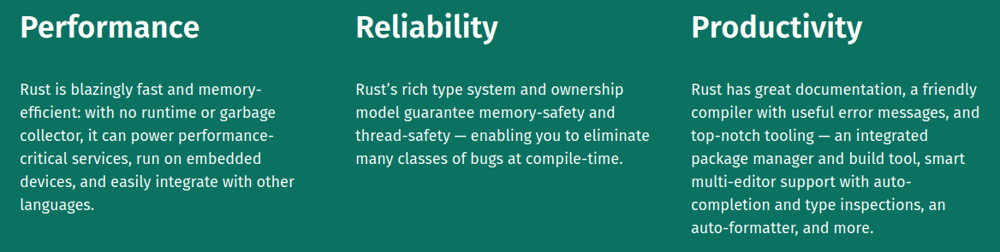

| Date/Time | | | Attendees | | | Topics |
|---|---|---|---|---|
| April 12th | | | Ankit Bhatia | | | How to Center a Div |
| 3:30PM PST | | | John Cena | | | Why use Rust? |
| | | Marilyn Monroe | | | Connecting to UCSD WiFi |
How to Center a Div
To horizontally center a block element (like div), use margin: auto;
Setting the width of the element will prevent it from stretching out to the edges of its container.
The element will then take up the specified width, and the remaining space will be split equally between the two margins.
Why use Rust?
Uses of Rust
- WebAssembly
- Networking
- Embedded
Connecting to UCSD WiFi
There are a few steps to be followed to connect:- Ensure your WiFi is turned on and searching for networks.
- Locate the UCSD-Protected or USCD-Guest network and attempt to connect.
- Login with your UCSD credentials.
- Hope and pray.
- Repeat Steps 2 through 4 as needed.
- By this point, your device should have connected. If not, contact UCSD IT.